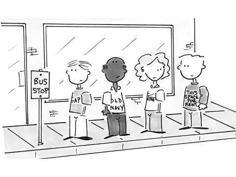

Scene at a Bus Stop
A bus stop hums with life and activity. At peak hours there is a mad rush. The school and college students, the office goers and the vie with each other to get into the buses. All sort of people can be seen at a bus stop. Some are impatient and look at their watches at every other second, other are worried and fret. But there are some who wait patiently. They even give smiles to others. Students stand in groups and talk. It presents an opportunity to study human nature. At most of the stops people try to stand in queues but as soon as a bus is visible, the queue is broken. Everyone just pushes and jostles. There is a lot of confusion then. At peak hours people try to board a bus whether there is any space in it or not. Traveling on footboards is very common. It is very dangerous. But it does not deter any one. Pick-pockets have their day at such hours.